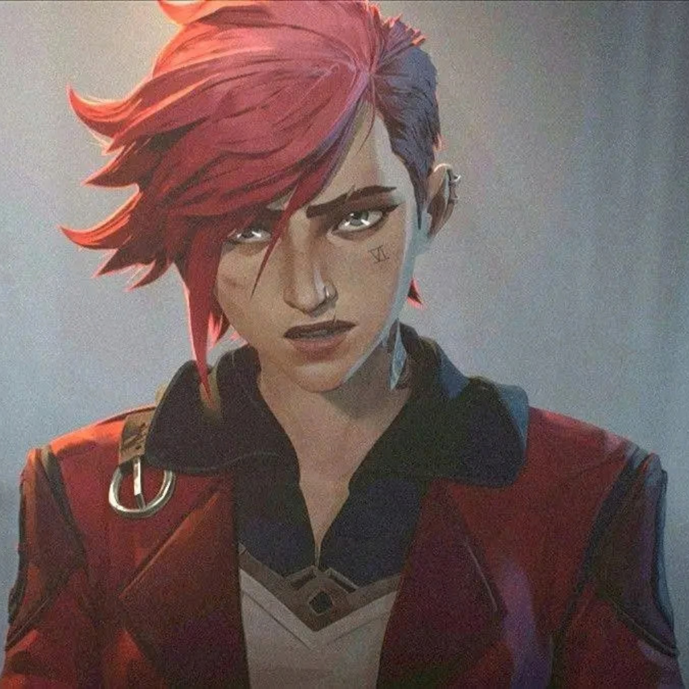
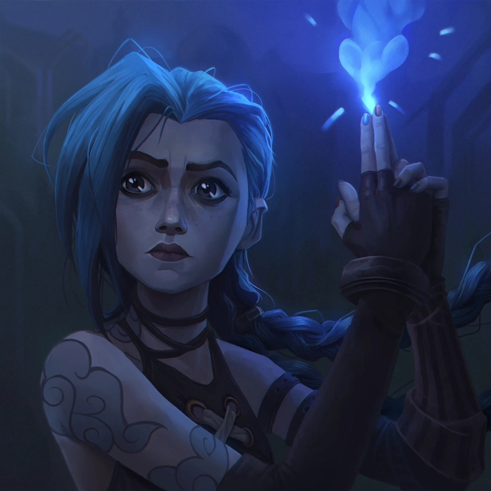
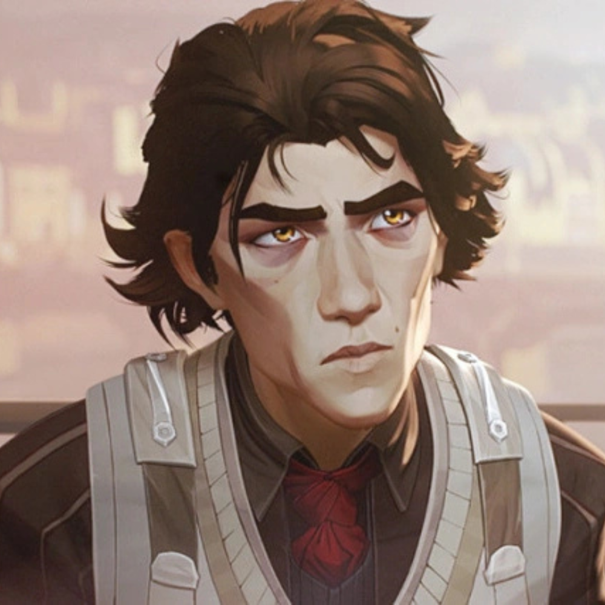
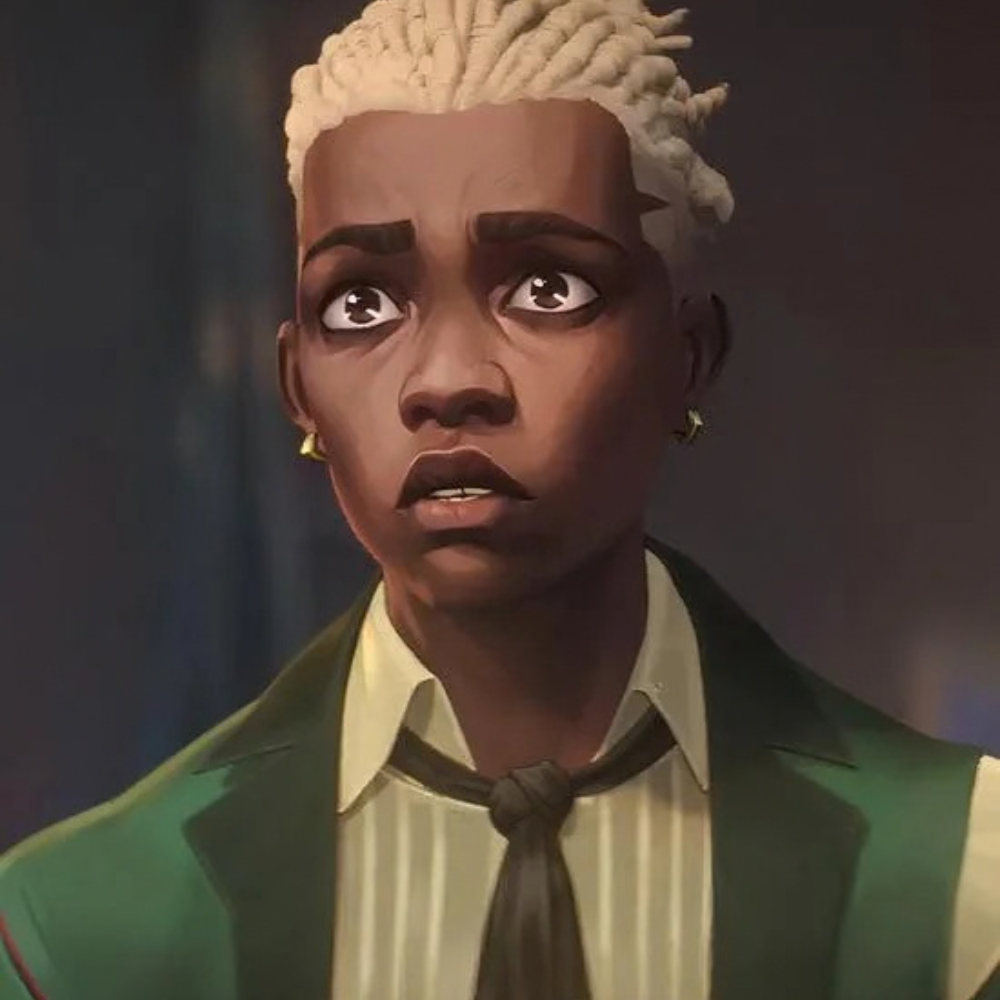
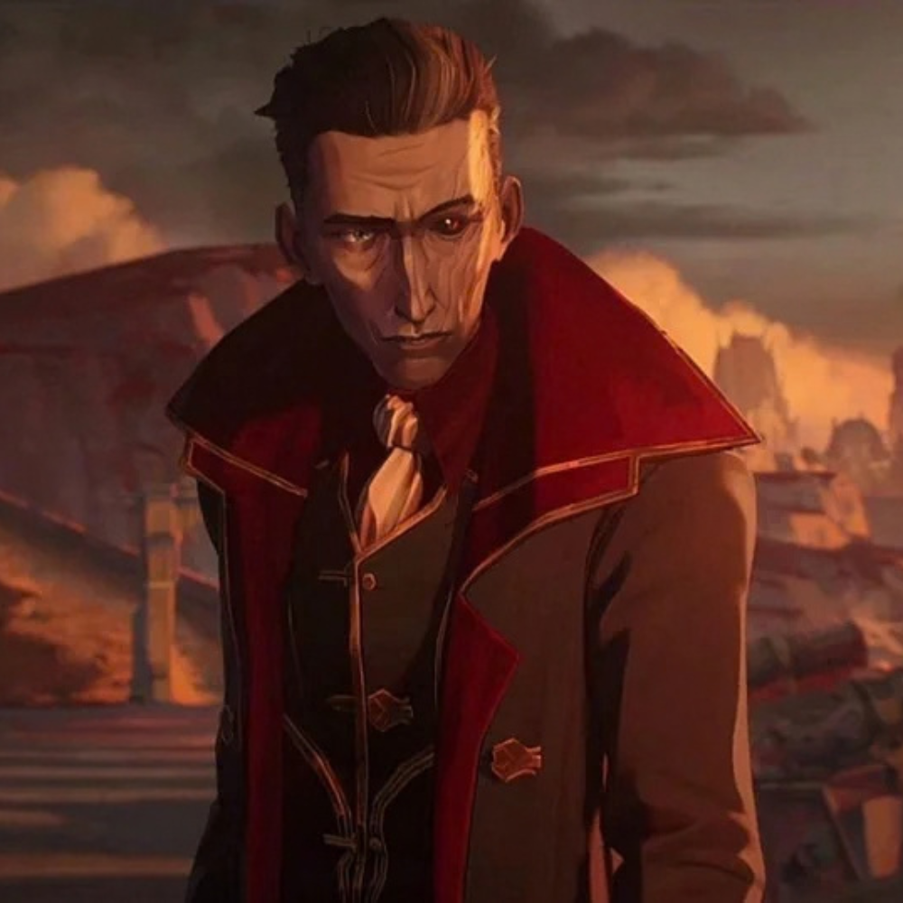
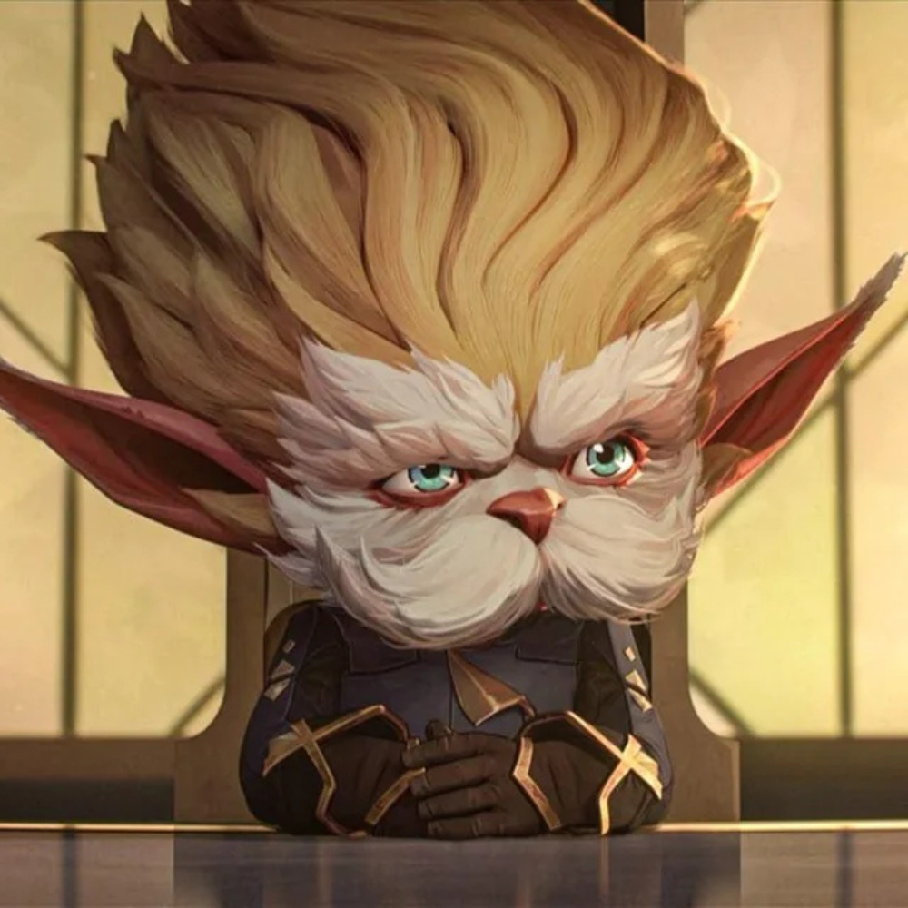
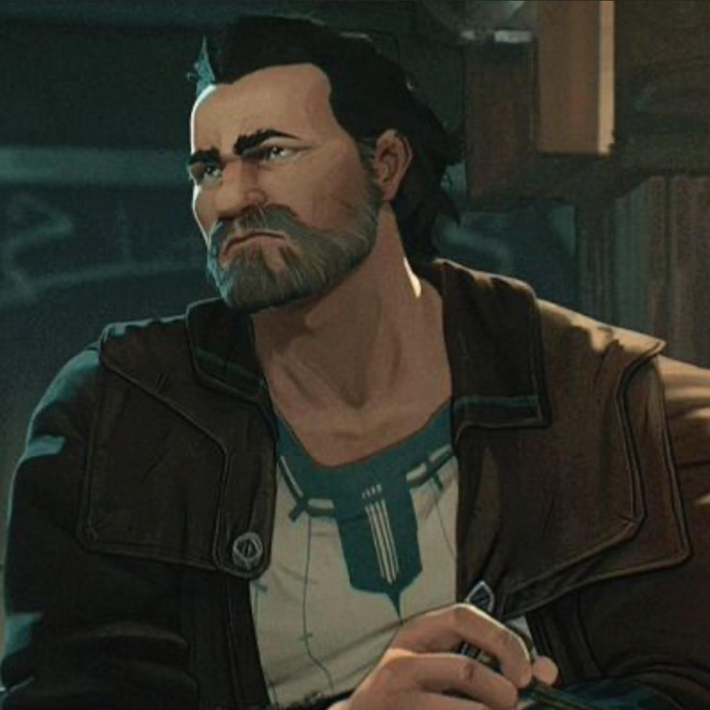

ARCANE
Uma página dedicada aos amantes da melhor adaptação de games já feita!
Como Arcane Surgiu?
Arcane surgiu a partir da parceria entre a Riot Games, criadora de League of Legends, e o estúdio de animação francês Fortiche Production. A ideia de criar uma série animada baseada no universo de League of Legends começou a ganhar força após o sucesso das animações e dos vídeos cinematográficos produzidos para o jogo. A Riot percebeu que seus personagens e suas histórias poderiam ser explorados de maneira mais profunda em outro formato. Assim, a empresa começou a desenvolver uma produção que não dependesse do conhecimento prévio do jogo, mas que apresentasse o universo de League of Legends para um público mais amplo. O projeto levou vários anos para ser desenvolvido, principalmente por causa da complexidade da animação e da construção de uma narrativa que combinasse ação, drama e desenvolvimento de personagens.
A série foi criada principalmente por Christian Linke e Alex Yee e teve como foco inicial a história das irmãs Vi e Jinx, mostrando acontecimentos de suas vidas antes de se tornarem as personagens conhecidas pelos jogadores. A narrativa também apresentou as cidades de Piltover e Zaun, explorando o contraste social, político e econômico entre elas. A Fortiche teve um papel fundamental na identidade visual da produção, utilizando um estilo de animação que combina técnicas digitais com características inspiradas em pintura e ilustração. Após anos de produção, Arcane estreou na Netflix em novembro de 2021 e recebeu grande reconhecimento do público e da crítica, tornando-se uma das principais adaptações de um universo de videogame para televisão.
Qual o objetivo da obra?
Os criadores de Arcane, Christian Linke e Alex Yee, buscaram transmitir uma reflexão sobre desigualdade social, conflitos familiares, traumas, poder e as consequências das escolhas humanas. O objetivo da obra é mostrar como diferentes condições de vida podem influenciar as pessoas e seus relacionamentos, principalmente por meio do contraste entre Piltover e Zaun e da relação entre Vi e Jinx. Além de expandir o universo de League of Legends, a série procura apresentar personagens complexos, mostrando que suas atitudes são influenciadas por suas experiências, perdas e pelo ambiente em que vivem.
Inspirações
Arcane foi baseada principalmente no universo e nos personagens do jogo League of Legends, desenvolvido pela Riot Games. A série foi inspirada nas histórias de personagens como Vi, Jinx, Jayce, Viktor, Caitlyn e Ekko, expandindo acontecimentos que já faziam parte do universo do jogo. Visualmente, a produção também recebeu forte influência do trabalho artístico da Fortiche Production, com uma animação que mistura elementos de pintura, ilustração e técnicas digitais. Além disso, a história utiliza referências a temas como desigualdade social, industrialização, ciência, tecnologia, conflitos políticos e relações familiares, especialmente no contraste entre as cidades de Piltover e Zaun.
Personagens Principais
Vi (Violet)

Vi, cujo nome verdadeiro é Violet, é uma das principais protagonistas de Arcane e uma personagem originalmente pertencente ao universo de League of Legends. Ela nasceu em Zaun e cresceu ao lado de sua irmã mais nova, Powder, que posteriormente se tornaria Jinx.
Vi é caracterizada por sua personalidade determinada, impulsiva e protetora, principalmente em relação à irmã. Após acontecimentos traumáticos durante sua infância, as duas acabam seguindo caminhos diferentes. Ao longo da série, Vi enfrenta conflitos relacionados à sua família, à desigualdade entre Zaun e Piltover e às consequências de suas próprias escolhas. Sua história também mostra sua relação com Caitlyn, uma investigadora de Piltover que passa a ser sua parceira em diferentes situações.
No universo de League of Legends, Vi é conhecida principalmente pelo uso de luvas mecânicas gigantes, que aumentam sua força e fazem parte de seu estilo de combate.
Jinx (Powder)

Jinx, cujo nome verdadeiro é Powder, é uma das principais personagens de Arcane e irmã mais nova de Vi (Violet). Ela cresceu em Zaun e, durante a infância, era uma garota inteligente e criativa, mas insegura e com dificuldade para acompanhar os outros. Após acontecimentos traumáticos que mudaram sua vida e sua relação com Vi, Powder passa a assumir a identidade de Jinx. Ao longo da série, a personagem enfrenta sentimentos de abandono, culpa, insegurança e conflitos relacionados à própria identidade, enquanto tenta encontrar seu lugar em um ambiente marcado pela violência e pela desigualdade.
No universo de League of Legends, Jinx é conhecida como uma criminosa caótica de Zaun, famosa por utilizar armas e explosivos em seus ataques. Confira a personagem no site oficial. Arcane apresenta uma versão mais aprofundada de sua origem, mostrando como Powder se transforma gradualmente em Jinx e explorando os acontecimentos e relações que contribuíram para essa transformação.
Caitlyn Kiramman

Caitlyn Kiramman é uma das principais personagens de Arcane e uma xerife de Piltover. Ela nasceu em uma família rica e influente da cidade e cresceu tendo acesso a uma vida privilegiada. Apesar disso, Caitlyn desenvolve um forte senso de justiça e decide investigar os acontecimentos que envolvem Piltover e Zaun. Durante suas investigações, ela conhece Vi, com quem estabelece uma parceria importante para a história.
Caitlyn é apresentada como uma personagem inteligente, determinada, observadora e habilidosa com armas de fogo. Sua trajetória permite explorar o contraste entre Piltover e Zaun, principalmente as diferenças sociais e políticas entre as duas cidades. Confira Caitlyn no site oficial de League of Legends.
Jayce Talis

Jayce Talis é um dos personagens centrais de Arcane e um inventor de Piltover. Desde jovem, ele demonstra grande interesse pela ciência e pela criação de novas tecnologias. Ao lado de Viktor, desenvolve a Hextech, uma tecnologia capaz de utilizar cristais mágicos para potencializar invenções e transformar a sociedade.
Ao longo da série, Jayce precisa lidar com o conflito entre ciência, política, ética e poder. Suas descobertas trazem grandes possibilidades para Piltover, mas também podem ser utilizadas de maneiras perigosas. Confira Jayce no site oficial.
Viktor

Viktor é um dos personagens centrais de Arcane e um brilhante cientista de Zaun que trabalha em Piltover. Apesar de ter vindo de uma região marcada pela pobreza e pela desigualdade, ele consegue se destacar no campo da ciência. Viktor se torna parceiro de Jayce Talis no desenvolvimento da Hextech, acreditando que a tecnologia pode melhorar a vida das pessoas e superar as limitações do corpo humano.
Ao longo da série, Viktor enfrenta problemas relacionados à sua própria condição física e passa a buscar maneiras de utilizar a ciência para aperfeiçoar o corpo e ampliar as capacidades humanas. Confira Viktor no site oficial.
Ekko

Ekko é um dos personagens importantes de Arcane e nasceu em Zaun, onde cresceu junto de outros jovens da região. Desde criança, demonstra grande talento para a engenharia e a invenção, utilizando sua criatividade para construir ferramentas e dispositivos.
Ao longo da história, Ekko representa principalmente a resistência, a criatividade e a esperança de mudança em Zaun. Ele acredita que é possível construir um futuro diferente para sua comunidade sem simplesmente reproduzir a violência que existe ao seu redor. Confira Ekko no site oficial.
Silco

Silco é um dos principais antagonistas de Arcane e uma figura influente no submundo de Zaun. Ele possui uma relação antiga com Vander, com quem compartilhava o desejo de tornar Zaun independente de Piltover. Entretanto, após um conflito entre os dois, Silco passa a seguir um caminho mais radical, utilizando o crime e a violência para alcançar seus objetivos.
Ao longo da série, Silco é apresentado como um personagem estratégico, determinado e disposto a tomar medidas extremas para conquistar a independência de Zaun. Apesar de suas ações violentas, sua relação com Jinx revela um lado mais afetivo e protetor. Silco é um personagem original criado para Arcane e não é um campeão jogável de League of Legends.
Mel Medarda

Mel Medarda é uma personagem importante de Arcane e uma das integrantes do Conselho de Piltover. Ela pertence à poderosa família Medarda e possui grande influência política e econômica na cidade. Inteligente e estrategista, Mel utiliza sua capacidade de negociação e sua influência para participar das principais decisões de Piltover.
Ao longo da série, Mel demonstra que suas decisões são influenciadas tanto pelos interesses políticos de Piltover quanto por questões relacionadas à sua própria família e ao seu passado. Mel foi criada especificamente para Arcane e posteriormente foi adicionada ao jogo como uma campeã jogável.
Heimerdinger

Heimerdinger é um dos personagens mais antigos e respeitados de Piltover em Arcane. Ele é um cientista e inventor extremamente experiente, além de ser um dos fundadores e membros do Conselho de Piltover. Apesar de seu tamanho pequeno e aparência incomum, possui enorme conhecimento científico e tecnológico.
Ao longo da série, Heimerdinger representa a cautela científica e a preocupação com as consequências do progresso tecnológico. Sua experiência faz com que questione o uso de tecnologias poderosas sem que seus riscos sejam completamente compreendidos. Confira Heimerdinger no site oficial.
Ambessa Medarda

Ambessa Medarda é uma personagem importante da segunda temporada de Arcane e mãe de Mel Medarda. Ela é uma poderosa guerreira e líder de Noxus, uma região conhecida por sua cultura militar e expansionista no universo de League of Legends.
Ao longo da série, Ambessa se envolve cada vez mais nos conflitos políticos de Piltover e Zaun, buscando utilizar a situação a seu favor e ampliar sua influência. Confira Ambessa no site oficial.
Vander

Vander é uma das figuras mais importantes na infância de Vi e Powder e exerce um papel de pai adotivo para as duas. Ele vive em Zaun e administra o bar The Last Drop, tornando-se uma figura respeitada pela comunidade. No passado, Vander participou de conflitos contra Piltover ao lado de Silco, mas, depois de perceber as consequências da violência, passou a defender uma abordagem mais pacífica para proteger o povo de Zaun.
Ao longo da primeira temporada, Vander demonstra ser protetor, responsável e disposto a se sacrificar pela família. Seu passado com Silco também é fundamental para compreender o conflito entre os dois e os acontecimentos que afetam Vi e Powder. Vander é um personagem criado para Arcane e não era um campeão jogável de League of Legends.